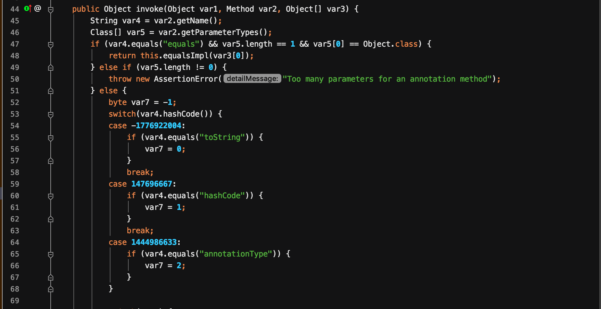

Java动态代理
熟悉Spring的一定知道AOP思想，AOP思想的原理就是Java的动态代理机制。
动态代理类主要涉及到两个类: java.lang.reflect.Proxy类和java.lang.reflect.InvocationHandler接口。
InvocationHandler接口
每一个动态代理类都必须实现InvocationHandler这个接口，并且每个代理类的实例都关联到了一个handler。当通过代理对象调用一个方法时，这个方法的调用就会被转发为由InvocationHandler这个接口的invoke方法来进行调用。在这个invoke方法中编写调用逻辑。
看看这个InvocationHandler接口唯一的方法invoke。
1 | Object invoke(Object proxy, Method, Object[] args) throws Throwable |
举个例子
在反序列化过程中，我们会遇到AnnotationInvocationHandler这个类，它实现了InvocationHandler这个类，来看看这个类的invoke方法

和上面的一样，事实上，它实例化出来的对象就是一个handler。
Proxy类
有了动态代理类，那么如何将需要被代理的对象与这个动态代理类相关联呢？这里就要介绍到Proxy类了。Proxy类的作用是用来动态创建一个代理对象的类，其中用的最多的创建方法是newProxyInstance这个方法。来看看这个方法
1 | public static Object newProxyInstance(ClassLoader loader, Class<?>[] interfaces, InvocationHandler h) throws IllegalArgumentException |
联想到CommonsCollections1中利用的动态代理机制，可以得知，目的是为了将LazyMap中的接口关联到AnnotationInvocationHandler类实例化的InvocationHandler对象上。代码如下:
1 | //获取LazyMap对象的ClassLoader对象 |
这样就实现了在调用LazyMap的任何方法，都会转发到AnnotationInvocationHandler的invoke方法。从而实现了动态代理。